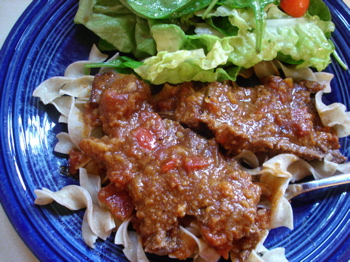

Today I ate a cheese sandwich...um, made a pot roast
Okay, my culinary life is boring! But my husband remarked to our son tonight that my blogging has had a positive effect on dinnertime, and he’s right; I had gotten into a rut of cycling the same 8-10 dishes, with variations, over and over again, things I knew how to make without consulting a recipe, and since I have begun posting, and reading other blogs, I have started cooking new things. Tonight was one of them.
I am on a mission to empty my freezer, partly due to vague, atavistic spring cleaning urges, and partly because I’m supposed to be getting my kitchen remodeled if I ever hear from my contractor again. We are in the middle of a string of chilly, rainy days here in Pittsburgh and it seemed like a good night to try a recipe from a cookbook I got for Christmas, Cook’s Country, 2005 edition
This is one of those “plan-over” recipes, where you deliberately make too much for one meal and plan a second meal around the leftovers, so I’m including the second recipe. I, on the other hand, had a small hunk of chuck roast in an unmarked zip-lock bag lurking deep in the freezer compartment and it was nowhere near the size this recipe calls for. I fed my husband, two teenage boys and myself, and we had a lot of sauce and about one ounce of meat left when we were finished. The guys really loved the spicy gravy.
I didn’t have any tortillas so crumbled some corn bread into the crock pot as a thickener and it worked just fine, skipping the extra 3/4 cup stock used to pulverize the tortillas. And since I also didn’t have any fresh cilantro I used some Consorzio cilantro oil as part of the oil when browning the meat and the vegetables. The recipe directs you to remove the roast and puree the liquids and solids remaining in the crock pot at the end of the cooking time, but unless you like your sauce really smooth this step is unnecessary; the vegetables have already cooked down and the gravy is just a bit chunky at this point.
If anyone tries this and has enough roast left to make the casserole I’d love to hear how it comes out. This plan-over kind of thing always sounds like such a great idea on the pages of the women’s magazines but somehow never seems to work out in my household. I may dump the leftover sauce on top of a meat loaf and call it a “Southwestern Meat Loaf”.

Southwestern Pot Roast
Serves 6, with enough leftovers to make Beef Tortilla Casserole.
Corn tortillas are used to thicken the gravy for this pot roast. Vary the heat by adjusting the amount of cayenne pepper. Serve with rice or egg noodles. In most markets, you will have to order a large 5½- to 6-pound chuck roast. Alternatively, use two 3-pound roasts (which are common in most markets). If making Beef Tortilla casserole (see recipe below), reserve 4½ cups of gravy and 4 cups of meat.
- 1 large boneless beef chuck roast (5½ to 6 pounds), tied
- salt and pepper
- 4 teaspoons vegetable oil
- 2 medium onions, chopped
- 1 medium red bell pepper, chopped
- 4 medium jalapeño chiles, seeded and minced
- 8 medium garlic cloves
- 1 (28-ounce) can crushed tomatoes
- 2¾ cups low-sodium chicken broth
- 3 tablespoons chili powder
- 2 tablespoons ground cumin
- 1-2 teaspoons cayenne pepper
- 1 teaspoon dried oregano
- 6 (6-inch) corn tortillas
- 2 tablespoons chopped fresh cilantro
1. Season roast liberally with salt and pepper. Heat 2 teaspoons oil on 12-inch skillet over medium-high heat until shimmering but not smoking. Brown roast thoroughly on all sides, 8 to 10 minutes. Transfer browned roast to slow-cooker insert. 2. Reduce heat to medium. Add remaining 2 teaspoons oil to empty skillet along with onions, bell pepper, chiles and garlic. Cook, stirring occasionally, until vegetables are lightly browned, about 4 minutes. Transfer vegetables into slow-cooker insert. 3. Increase heat to high. Add tomatoes and 2 cups broth to empty skillet, scraping up any brown bits with wooden spoon. Add chili powder, cumin, cayenne, and oregano and bring to boil. Transfer to slow-cooker insert. 4. Tear tortillas into small pieces and combine in medium microwave-safe bowl with remaining ¾ cup broth. Heat on high power until softened, about 2 minutes. Puree in food processor until smooth. Transfer to slow-cooker insert. 5. Set slow cooker to high, cover, and cook until tender, 6 to 7 hours. (Alternatively, cook on low for 9 to 10 hours.) Transfer roast to carving board; loosely tent with foil to keep warm. Allow liquid in pot to settle about 5 minutes, then use wide spoon to skim fat off surface. Puree liquid and solids in batches in blender or food processor. (Alternatively, use immersion blender and process until smooth.) Stir in cilantro and season to taste with salt and pepper. 6. Remove strings from roast and cut into ½-inch-thick slices. Transfer meat to warmed serving platter. Pour about 1 cup gravy over meat. Serve, passing more gravy separately.
Beef Tortilla Casserole Serves 6-8
This hearty Mexican casserole with beef, beans, tortillas and cheese makes a complete meal. Just add a salad.
- 1½ cups shredded sharp cheddar cheese
- 1½ cups shredded Monterey Jack cheese
- 4½ cups leftover gravy from Southwestern Pot Roast
- 2 (14½-ounce) cans pinto beans, drained and rinsed
- 4 cups meat from Southwestern Pot Roast, torn into 1½-inch chunks
- ¼ cup lime juice from 2 limes
- ¼ cup chopped fresh cilantro
- salt and pepper
- 18 (6-inch) corn tortillas
- 1 cup sour cream
- ½ cup chopped scallions
1. Adjust oven racks to upper and lower positions and heat oven to 300 degrees. Spray 13 by 9-inch baking dish with cooking spray. Mix cheeses together and set aside. 2. Bring gravy to boil in large saucepan over medium heat. Stir in pinto beans and meat, and warm through. Remove pan from heat, add lime juice and cilantro, and season with salt and pepper to taste. 3. Place tortillas on two baking sheets (some overlapping is fine) and spray both sides of tortillas lightly with cooking spray. Bake until tortillas are very soft and pliable, about 5 minutes. Increase oven temperature to 450 degrees. 4. Spread one-third of beef mixture in greased baking dish. Layer 6 tortillas on top, overlapping as needed. Sprinkle with 1 cup cheese. Repeat to form second layer. 5. Cut remaining 6 tortillas into quarters. Spread remaining beef mixture in baking dish and cover with tortilla pieces. Cover with remaining 1 cup cheese. 6. Bake on bottom oven rack until cheese is golden brown and casserole is bubbling, about 15 minutes. Let rest 5 minutes. Cut casserole into individual portions and transfer to plates. Dollop a heaping teaspoon sour cream in center of each portion and sprinkle with scallions. Serve immediately.
Comments
Nice title! I know what you mean about recycling the same 8 dishes over and over. Oh, the pressures of food blogging! You’re obligated to come up with something new a couple of times a week when sometimes you just want something tried and true. The pot roast looks good, tho. I want to make a pot raost sometimes soon.
Funny title!
This pot roast looks good — and different. It’s not the same-old, everyday pot roast.
I like the whole strategy of intentional leftovers, especially leftovers that are different from the original meal.
Add a comment